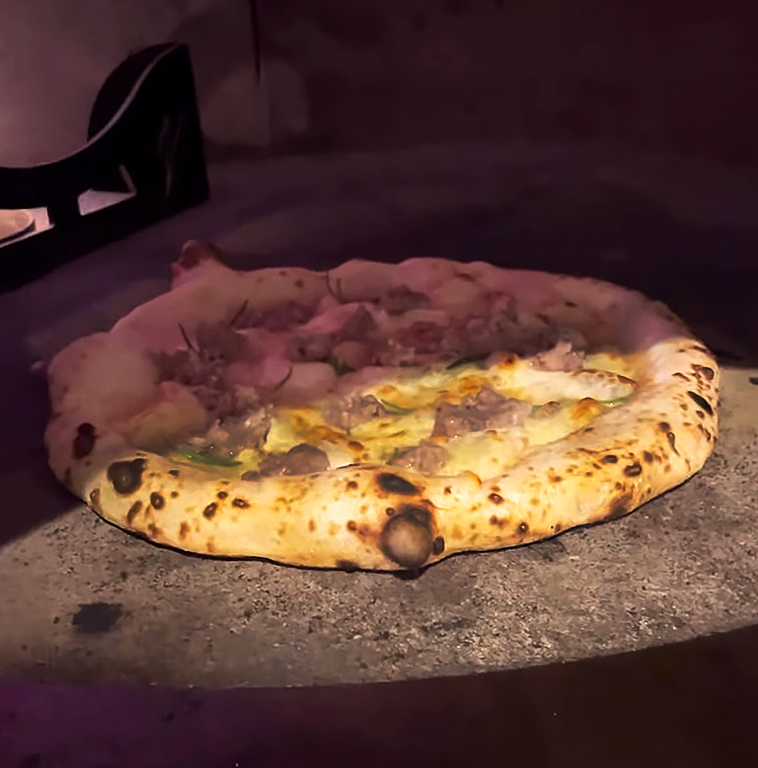
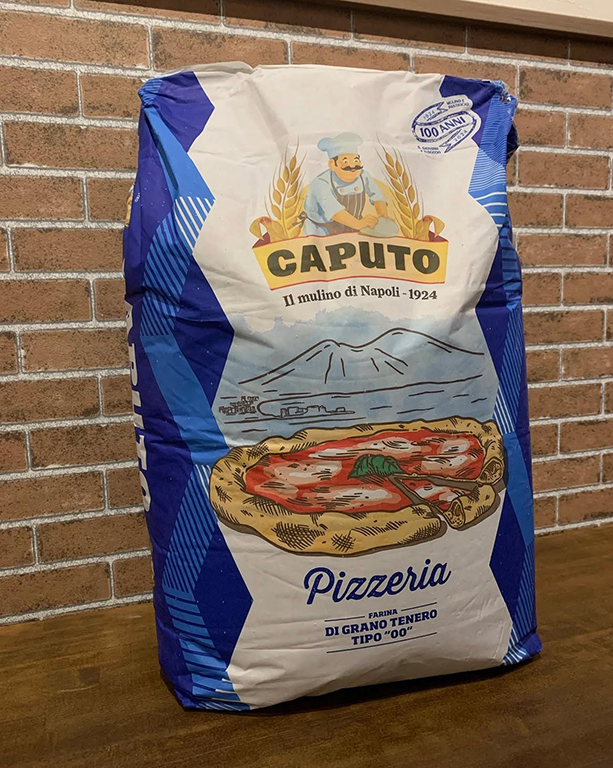
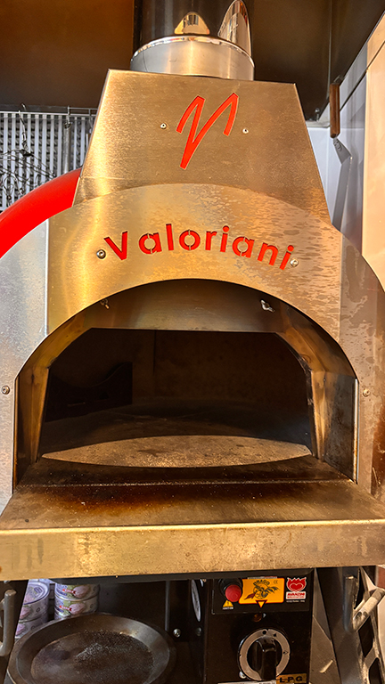

ABOUT

イタリア人シェフが振る舞う
現地のピザを南柏で
CASA DILOLOは、イタリア人オーナーと日本人のご夫婦が営むピザレストランです。
地元で愛される秘訣は、オーナーの揺るぎないこだわり。当店のピザは、イタリア産のピザ粉、チーズ、トマトソースなど厳選食材を使用し、その他の食材やお酒も現地から輸入しています。
そして最大の魅力は、オーナーが母国イタリアで生まれ育ち、日常で味わってきた「本物のピザの味」を知り尽くしていること。その確かな舌と経験が、ピザ一枚一枚にイタリアの食卓そのままの味わいを再現しています。
CASADILOLLOの特徴
-

ピザ生地へのこだわり
「CASADILOLLO」のピザ生地は、軽くてサクッと、
そしてもちっとした独特の食感が特徴。
小麦本来の豊かな香りと風味を最大限に引き出すため、本場イタリア「カプート社」の最高級00番小麦粉を厳選。
耳まで美味しい、深い味わいのピザをお届けします。 -

CASADILOLOの窯
当店では、世界中で愛されるイタリア・ヴァロリアーニ社の石窯を使用。400℃近い高温で一気に焼き上げるピザは、外カリッ、中もちもちの食感。香ばしい香りと小麦の豊かな風味が口いっぱいに広がる、石窯ならではの逸品です。
一度食べたらやみつきになる本格ピザを、ぜひご賞味ください。
今日は家族でランチは
LOLLOの家
今夜友人との飲みも
LOLLOの家
CASA DI LOLLO」は、オーナーLOLLOの「家」そのもののような、心からくつろげるイタリアンです。
店内に一歩足を踏み入れれば、タイル調の床や並べられた本が、まるでイタリアの知人宅を訪れたかのような温かい雰囲気を醸し出します。「今日はロロんちに食べに行こう！」そんな親しみと温かい思いが込められたこの場所は、看板のロゴにも家のイラストが描かれています。
「CASA DI LOLLO」は何度も訪れたくなる場所です。ぜひ足を運んでみては？